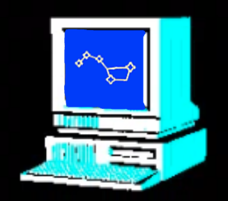

mark umina
embedded software engineer
nyc | boston
mark.umina@gmail.com
linkedin
github
twitter
platforms:
- bare-metal
- freertos
- embedded linux
- mbed os/compiler
parts last used:
- esp32
- nordic-nrf
- pic10-32
- attiny
- imx6
- nvidia tx1
- tms320
- msp430
- stm32
- multitech mdot
peripherals:
- sensors and actuators
- smart home radios
- flash/eeprom
- cell modems (linux and bare-metal interfaces)
- analog to digital converters (adc)
- pwm controllers
- charge controllers
- serial communication controllers
- emif for ram/flash/fpga/cpld interfaces
- network co-processors
protocols:
- tcp/ip
- spi/i2c/uart/jtag/custom
- ble (on bluedroid/nordic/bluez)
- http(s)
- mqtt
- lora
- zigbee
- zwave
- nordic dfu transport
- modbus
- proprietary framing
software modules:
- drivers
- bootloader
- application
- local and ota upgrade
- system/program monitor
- system provisioners
linux-specific knowledge:
- u-boot source and boot scripting
- kernel compilation/patching
- logging
- init/systemd
- cmake/make/gcc
- peripheral communication (spi/i2c/etc...)
- c posix libraries
- system monitoring
- process resource monitoring
- partition and disk/image management
- secure data encryption/handling
electronics:
- digital circuit design/debug
- low-power hardware/software
- cpu/controller/soc selection & connectivity
languages:
- c/c++
- bash
- various asm
- some python
commercial software dev tools:
- iar embedded workbench
- rowley crossworks
- atmel start/studio
- ti code composer
- keil uvision
- mbed online and mbed studio
vm/container:
- vmware
- virtualbox
- vagrant
- docker
hardware dev tools + related:
- oscilloscope
- joulescope (favorite tool!)
- current probes
- function generator
- logic and protocol analyzer
- soldering/prototyping
- welding and other metal fabrication
- enclosure and potting
recent roles held:
- senior software consultant
- software due dilligence for aquisitions
- senior embedded software engineer